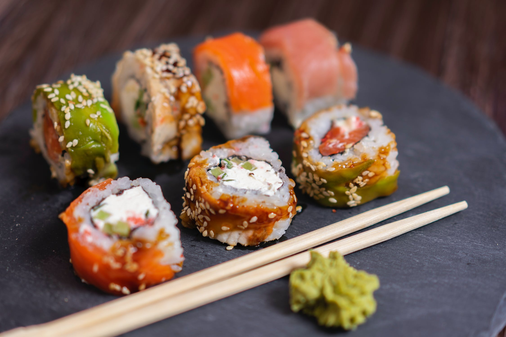
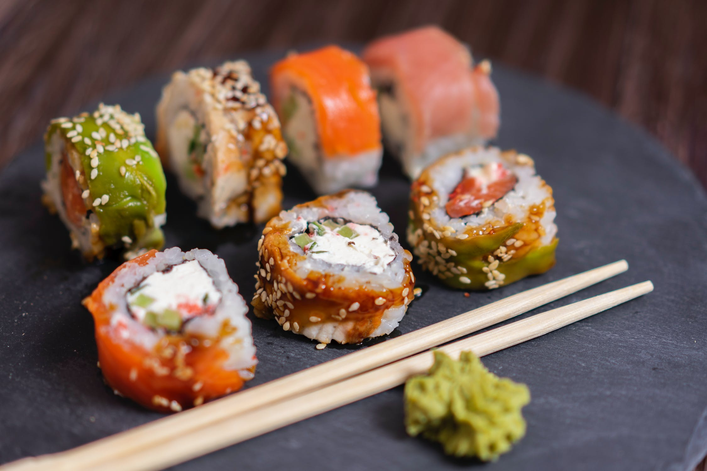

Наша Історія
За однією з найпоширеніших версій, наш магазин вперше з’явилися в Південно-Східній Азії в 20 столітті. Проте наші суші були радше не повноцінною стравою, а просто закускою. Ми почали розвивати наші ресторанчики по всьому світі.
Детальніше про нас
Смачні
Рецепти
 

Меню
До нашого меню входять Сет Місакі Сет Філа, Ceт Драконів, Сет Наомі, Сет Маемі, Iмператорський сет,Сирний сет,Сет Нагасакі
Переглянути ціле менюПрекрасні
Смаки
Сервіс
Наш персонал невпинно навчається, адже важливо, щоб співробітники завжди залишалися ввічливими. Особливі вимоги до кур’єрів. Адже доставка суші у Львові має бути вчасною. Ми працюємо із посмішкою, тільки на справних транспортних засобах, маємо спеціальні сумки для безпечного перевезення їжі та із задоволенням йдемо на зустріч клієнтам!
Детальніше про суші